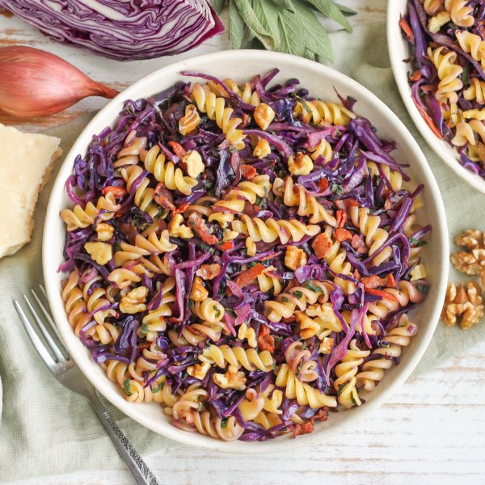

Pasta Skillet with Cabbage, Carrot, Bacon, Walnuts, Sage & Parmesan

Prep Time
35 min
Nutrition (per serving)
692.2 kcalCalories
25.4 gProtein
73 gCarbs
34 gFat
Full nutrition table
| Calories | 692.2 kcal |
| Total fat | 34 g |
| Saturated fat | 10.9 g |
| Trans fat | 0.2 g |
| Cholesterol | 46.6 mg |
| Sodium | 438.1 mg |
| Carbohydrates | 73 g |
| Fiber | 8.1 g |
| Sugars | 11 g |
| Protein | 25.4 g |
| Potassium | 838.5 mg |
| Calcium | 151.4 mg |
| Iron | 5.1 mg |
| Vitamin A | 297.3 IU |
| Vitamin C | 85.1 mg |
| Vitamin D | 11.7 IU |
Cookware
Ingredients
- 8 slicesbacon
- 2 mediumcarrots
- ½ small pkgfresh sage
- 2 clovesgarlic
- 2 ozParmesan cheese
- 1 small headred cabbage
- 10 ozrotini pasta
- 2shallots
- ¼ cupwalnuts
- apple cider vinegar
- black pepper
- extra virgin olive oil
- salt
Steps
- Fill a large pot halfway with hot water (from the tap); cover and bring to a boil over high heat. Uncover, add salt and pasta, and stir for a few seconds. Cook until desired firmness, 8-10 minutes. (Reserve a ½-cup cooking water before draining and set aside.)1 tsp salt
10 oz rotini pasta - Meanwhile, wash and dry the fresh produce.1 small head red cabbage
2 medium carrots
½ small pkg fresh sage - Halve cabbage lengthwise, cut out the core, and slice crosswise into thin (shred-like) strips. Place in a medium bowl.
- Peel, trim, and coarsely grate carrots. Add to the bowl with the cabbage and set aside.
- Preheat a large skillet over medium heat.
- While the skillet heats up, small dice bacon.8 slices bacon
- Once the skillet is hot, add bacon and cook, stirring occasionally, until crispy, 4-5 minutes. Using a slotted spoon, remove bacon to a paper towel-lined plate. (Reserve skillet with drippings for later use.)
- While the bacon is cooking, using a clean cutting board, peel and mince shallots and garlic.2 shallots
2 cloves garlic - Return the skillet (with drippings) to medium heat, add oil, and swirl to coat the bottom. Add cabbage, carrot, shallot, and garlic; cook, stirring occasionally, until cabbage is tender, about 5 minutes.2 tsp extra virgin olive oil
- Meanwhile, finely grate Parmesan.2 oz Parmesan cheese
- Pick sage leaves off the stems; discard stems and mince the leaves.
- When the cabbage is done, add pasta, reserved pasta water, Parmesan, sage, vinegar, salt, and pepper to the skillet. Continue to cook, stirring occasionally, until water has evaporated and Parmesan has melted, about 2 minutes. Remove from heat.2 tbsp apple cider vinegar
½ tsp salt
¼ tsp black pepper - Meanwhile, roughly chop walnuts.¼ cup walnuts
- To serve, divide pasta between plates or bowls; top with crispy bacon and walnuts. Enjoy!